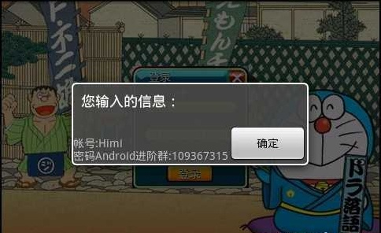
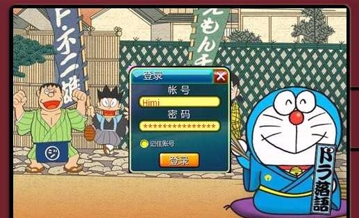

【Android2D游戏开发之五】游戏注册界面,两个Activity切换交互
今天讲下在Surfaceview中如何实现两个或者多个Activity之间的切换与数据交互，为了更形象一些我做了一个游戏登录界面的demo，其中对于输入界面的布局这些我也是随意写了下，主要是实现功能并没有花时间去美化，所以大家可以自己去xml或者代码中去改变布局，每个小组件的宽高等。好了，下面先上图


由于代码中一共写了三个类，这里不再全部贴出来，不方便;大家可以在文章的末尾去下载源码；两个activity之间切换我概括的分为两步：1. 代码实现切换操作。2.配置中声明另外一个acitivity！我们先看第一步:这里是触屏处理中的一段代码：
public boolean onTouchEvent(MotionEvent event) { float pointx = event.getX();
float pointy = event.getY();
if (pointx > bp_x + 14 && pointx < bp_x + 14 + 117) {
if (pointy > bp_y + 43 && pointy < bp_y + 43 + 15) {
// 帐号
Intent i = new Intent();// 得到一个意图的实例
i.putExtra("count", 1);// 写出数据
i.putExtra("himi", str_zh);
i.setClass(MainActivity.instance, Register.class);// 设置当前activity以及将要操作的类
MainActivity.instance.startActivity(i);// 用当前activity来启动另外一个activity
}
}
}
显示定义一个intent 对象，Intent 这个类的机制是协助交互的，详细的说明这里不多讲； Intent 中的putExtra()函数是起到两个activity之间交互交互的，这个方法类似 hashtable 或者hashmap中的put是一样的，第一个参数是key（索引） ，后一个参数volue（值），根据key我们可以得到对应的volue了。那么后面我也附上接受的处理。 Intent 中的setClass()函数也是传入两个参数，第一个是传入当前实例的activity对象，后面一个参数指需要打开的activity这个类！然后我们就可以利用当前activity对象来启动另外一个activity了。然后我们看下在另外一个activity是如何创建并且怎么接受数据的。
import android.app.Activity;import android.content.Intent;
import android.os.Bundle;
import android.view.View;
import android.view.View.OnClickListener;
import android.widget.Button;
import android.widget.EditText;
import android.widget.LinearLayout;
import android.widget.TextView;
public class Register extends Activity {
private Button button_ok;
private EditText et;
private TextView tv;
private LinearLayout ly;
private Register rs;
private byte count;
@Override
protected void onCreate(Bundle savedInstanceState) {
super.onCreate(savedInstanceState);
rs = this;
ly = new LinearLayout(this);
button_ok = new Button(this);
button_ok.setWidth(100);
button_ok.setText("确定");
button_ok.setOnClickListener(new OnClickListener() {
public void onClick(View v) {
if (count == 1) {
MySurfaceView.str_zh = et.getText().toString();
} else if (count == 2) {
MySurfaceView.str_pass = et.getText().toString();
}
rs.finish();
}
});
Intent intent = this.getIntent();
count = (byte) intent.getIntExtra("count", 0);
String temp_str = "";
String temp_str2 = "";
et = new EditText(this);
tv = new TextView(this);
if (count != 3) {
temp_str = intent.getStringExtra("himi");
if (count == 1) {
rs.setTitle("请输入帐号!");
} else {
rs.setTitle("请输入密码!");
}
ly.addView(tv);
ly.addView(et);
ly.addView(button_ok);
if (temp_str != null) {
et.setText(temp_str);
}
} else {
temp_str = intent.getStringExtra("himi_zh");
temp_str2 = intent.getStringExtra("himi_pass");
rs.setTitle("您输入的信息：");
tv.setText("帐号:" + temp_str + "\n" + "密码" + temp_str2);
ly.addView(tv);
ly.addView(button_ok);
if (temp_str != null) {
et.setText(temp_str);
}
}
setContentView(ly);
}
}
以上代码可以看出，新建一个activity其实只需要继承Activity以及重写onCreate（）方法即可。当然创建的还需要一步很重要的步骤，那么在第二步中会详细说明，这里我们看下是如何接受之前的activity传来数据的、。Intent intent = this.getIntent();
count = (byte) intent.getIntExtra("count", 0);接受也是很简明易懂，创建一个Intent 意图对象，调用来去getIntExtra函数得到之前传来的数据，根据key！当然还有getStringExtra()等等函数都是类似，只是根据你传入的数据不同选择不同函数罢了。童鞋们应该注意的是getIntExtra中第二个参数是什么意思，其实就是一个对于找不到key相匹配的时候会默认return 0 ;那么下面介绍第二步：在配置中声明 当创建一个activity的时候我们必须去在AndroidMainFeset.xml中去生命我们创建的这个类是个Activity！下面附上xml中的code！
<activity android:name="com.himi.Register" android:theme="@android:style/Theme.Dialog"android:screenOrientation="landscape" android:configChanges="keyboardHidden|orientation">
</activity>
<!--我是注释-->
<activity android:name="com.himi.Register"></activity>
<!---->此符号是注释这里我们有两个声明方法，用注释隔开了，上面一个声明中还设定了一些属性，theme显示的形式，等等，其实最简单的声明也是可以的就像注释下面那一句声明就足以起到作用了。当有新的activity的时候一定要去声明；千万不要忘记这一步。备注：配置中有一属性 ->android:screenOrientation这是设置横屏，所以竖屏中点击会有问题，如果想竖屏显示正常那么可以自行删除xml中的android:screenOrientation="landscape" 就可以了。